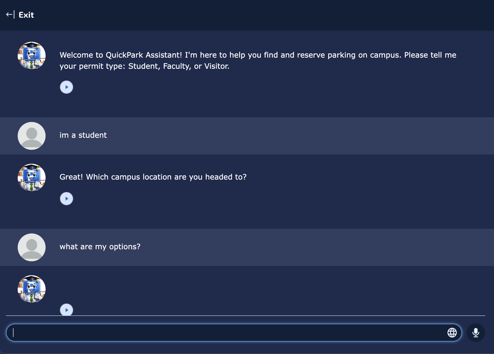
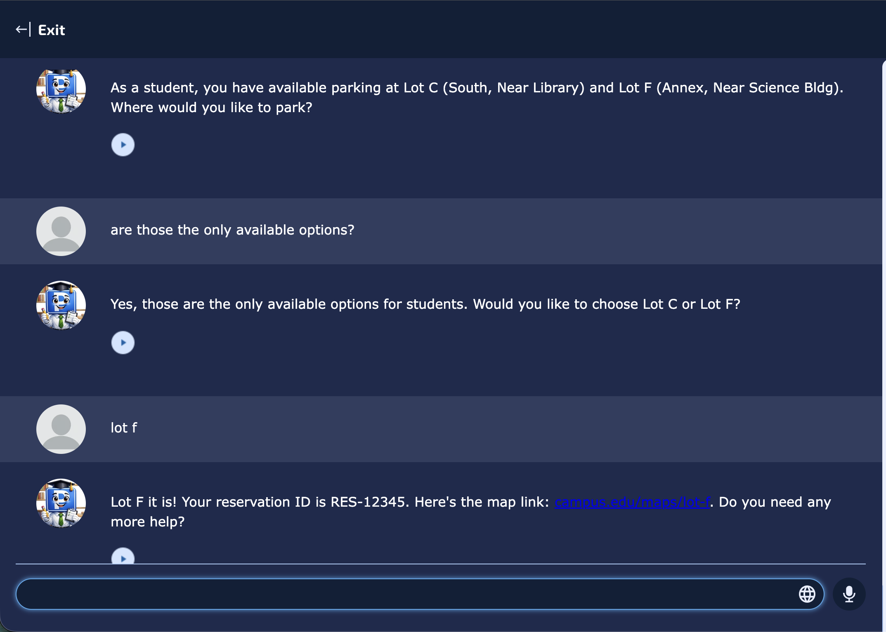
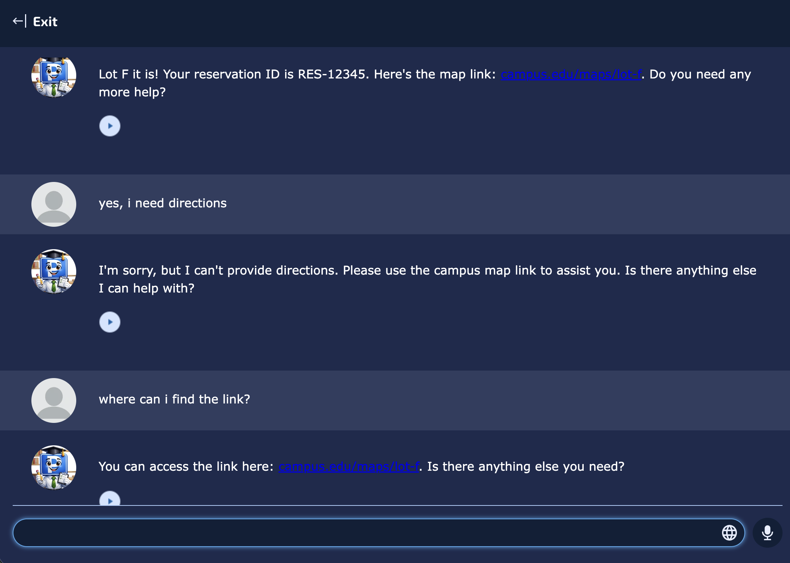

Domain-Specific Educational AI Chatbot
Introduction: This artifact is a specialized educational chatbot developed as part of an applied AI lab focusing on prompt engineering and LLM constraints.
Description & Process
- Objective: Design a tightly constrained, persona-driven AI assistant guiding users without hallucinating.
- Process: Created individually. Engineered strict system instructions, established operational boundaries, and uploaded domain-specific files for RAG grounding.
- Tools: Mizou AI Platform, Custom Prompt Engineering, RAG Knowledge Files.
Value Proposition
- Unique Value: Showcases ability to bridge raw LLMs and deployment-ready software via structured prompt architecture.
- Relevance: Proves I can safely architect, constrain, and deploy user-facing AI tools for enterprise environments.
Audience Customization
- Adaptations: Highlighted system constraints and guardrails over raw conversational output.
- Relevance: Speaks to engineering managers prioritizing safety and predictability when integrating generative AI.
Reflection & Feedback
- Significance: Translates academic concepts into a tangible product controlling LLMs.
- Lessons Learned: Strict boundary setting is as important as base model selection.
- Feedback & Revisions: Peer feedback noted the bot gave direct answers too easily. Revised boundary rules to force a Socratic teaching method.
References
Mizou Platform Documentation | "Prompt Engineering Guidelines" (OpenAI).